MyHomeMaker 튜토리얼 — 요즘 스타일 홈페이지 만들기
이 문서는 앱 안의 튜토리얼을 단계별 화면과 함께 그대로 옮긴 것입니다. 빈 사이트에서 시작해 4개 페이지(홈·요금제·소개·문의) 로 된 AI 노트 앱 ‘플로우노트’의 홈페이지를 만들고, 디자인을 다듬고, 휴대폰에서 확인하고, 문제점과 맞춤법을 점검한 뒤 게시합니다.
튜토리얼 실행하기
- 시작 화면 › 튜토리얼 시작, 툴바의 튜토리얼 버튼, 도움말 › 튜토리얼 또는 F11.
- 카드의 다음 / 이전으로 한 단계씩, 자동 재생으로 끝까지 봅니다. 장 목록으로 원하는 장으로 바로 가고, ✕ 또는 Esc로 언제든 끝냅니다.
- 어느 단계로 건너뛰어도 그 단계까지 만든 사이트가 그대로 나타납니다.
- 튜토리얼은 자기 사이트에서만 작업합니다. 열어 둔 사이트는 바뀌지 않고, 바꾼 테마·언어·사전·보기 설정은 끝날 때 원래대로 돌아갑니다.
- 전체 과정 동영상:
doc/video/MyHomeMaker-Tutorial.mp4(프로젝트 폴더에도 같은 파일이 있습니다).npm run tutorial:video로 다시 만듭니다.
이 튜토리얼이 따르는 요즘 홈페이지의 흐름
| 흐름 | 튜토리얼에서 |
|---|---|
| 한 문장으로 말하는 큰 첫 화면 | 대표 배너, 짧고 굵은 제목 |
| 벤토 격자 | 특징 블록 2열 4칸 |
| 신뢰를 보여 주기 | 로고, 숫자, 후기 |
| 분명한 다음 행동 | 첫 화면 버튼, 고정된 머리글 버튼, 마지막 행동 유도 |
| 다크 모드와 강조색 | 오로라 디자인, 분홍 강조색, 둥근 모서리 |
| 휴대폰 우선 | 태블릿·휴대폰 너비, 미리 보기 |
| 검색엔진과 접근성 | 사이트 설명·키워드, 그림 대체 글, 맞춤법 |
| 빠르고 안전한 정적 사이트 | HTML·CSS 폴더나 ZIP으로 게시 |
차례
- 시작하기
- 첫 페이지 만들기
- 페이지 늘리기
- 디자인 다듬기
- 휴대폰에서 보기
- 점검하기
- 게시하기
- 마치며
1. 시작하기
1. MyHomeMaker에 오신 것을 환영합니다
이 튜토리얼은 빈 사이트에서 시작해 4개 페이지(홈·요금제·소개·문의)로 된 ‘플로우노트’ 홈페이지를 실제로 만들어 게시하기까지 보여 줍니다. 아래 카드의 ‘다음’ 또는 자동 재생을 누르세요.
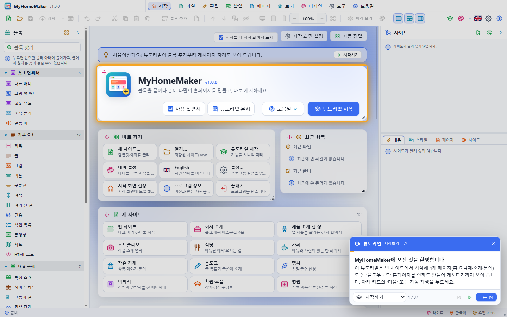
2. 완성될 사이트 미리 보기
요즘 홈페이지의 흐름을 따릅니다: 한 문장으로 말하는 큰 첫 화면, 벤토 격자의 기능 소개, 로고·숫자·후기로 보여 주는 신뢰, 페이지마다 분명한 다음 행동, 다크 모드, 휴대폰 우선 확인, 검색엔진 설명과 맞춤법 점검.
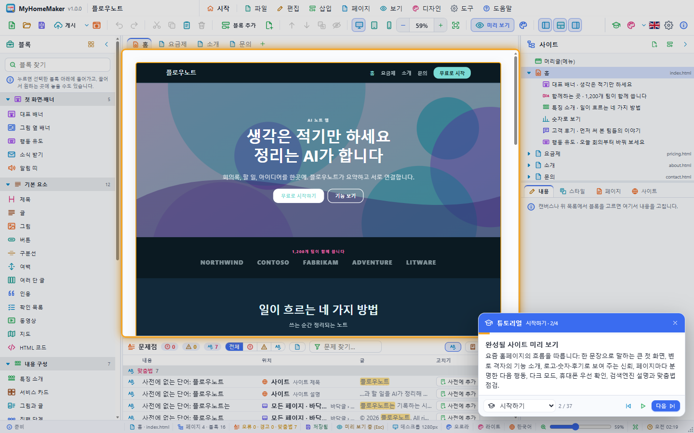
3. 새 사이트 만들기
새로 만들기(Ctrl+N)는 빈 사이트, 12가지 템플릿, 40가지 예제 중에서 고릅니다. 이름과 디자인을 정하고 만들기를 누르면 됩니다. 이 튜토리얼은 빈 사이트에 ‘플로우노트’라는 이름으로 시작합니다.
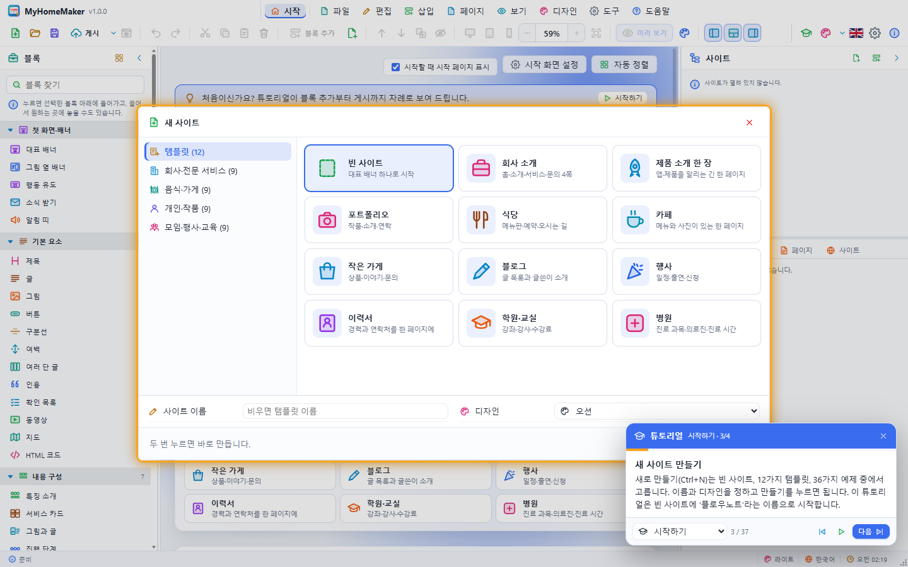
4. 작업 화면
왼쪽은 블록 패널, 가운데는 실제 사이트와 똑같이 그려지는 캔버스, 오른쪽은 페이지·블록 목록과 내용·스타일·페이지·사이트 편집 창, 아래는 문제점 패널입니다. 빈 홈 페이지에 블록을 하나씩 쌓아 갑니다.
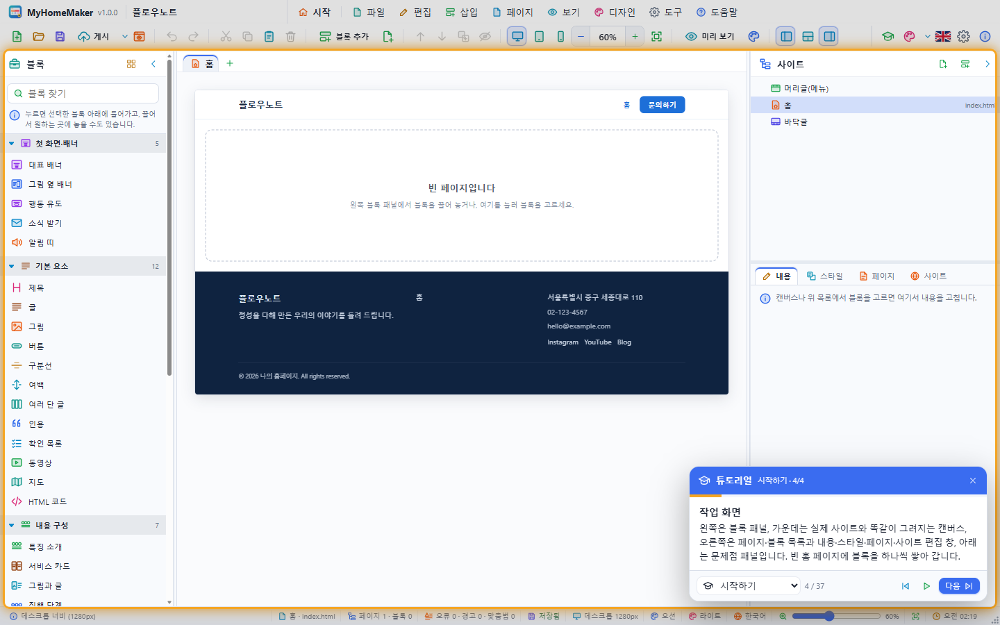
2. 첫 페이지 만들기
5. 첫 화면: 대표 배너
방문자가 3초 안에 무슨 사이트인지 알아야 합니다. 블록 패널의 ‘대표 배너’를 누르면 선택한 블록 아래에 들어가고, 캔버스로 끌어다 놓아 원하는 자리에 넣을 수도 있습니다.
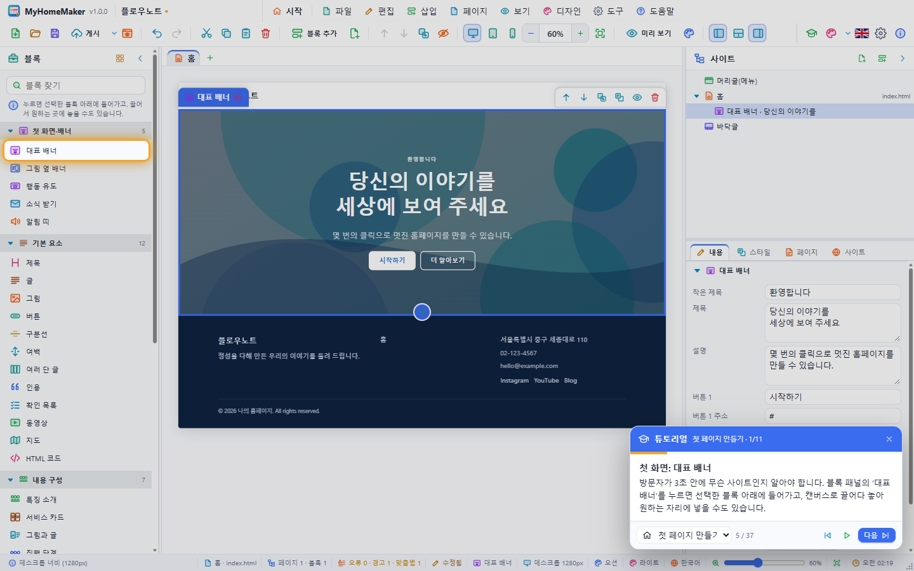
6. 글은 화면에서 바로 고칩니다
제목을 클릭하고 그대로 입력합니다. 짧고 굵은 한 문장이 요즘 첫 화면의 핵심입니다. 일부러 틀린 글자가 하나 들어갔는데, 뒤의 ‘점검하기’에서 맞춤법 검사로 찾아 고칩니다.
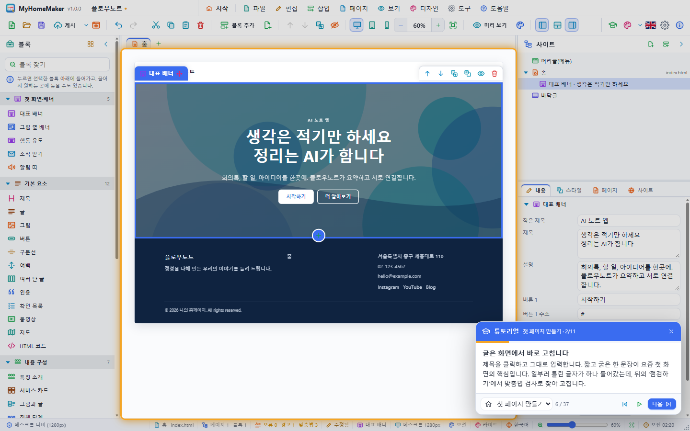
7. 버튼과 링크: 다음 행동 하나
내용 탭에서 버튼 글자와 주소를 정합니다. 가장 중요한 버튼(무료로 시작하기)은 요금제 페이지(pricing.html)로, 두 번째 버튼은 같은 페이지의 기능 소개(#features)로 보냅니다. 그림도 여기서 바꿉니다.
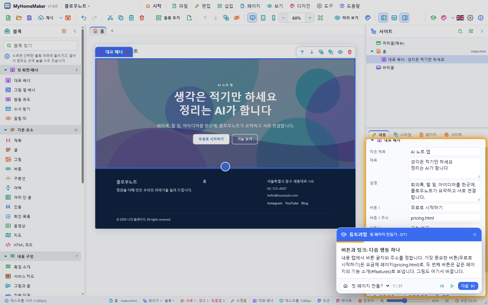
8. 신뢰: 함께하는 회사 로고
첫 화면 바로 아래에 ‘누가 쓰는지’를 보여 주면 믿음이 생깁니다. 로고 블록은 회사 이름 글자나 로고 그림을 한 줄로 늘어놓습니다.
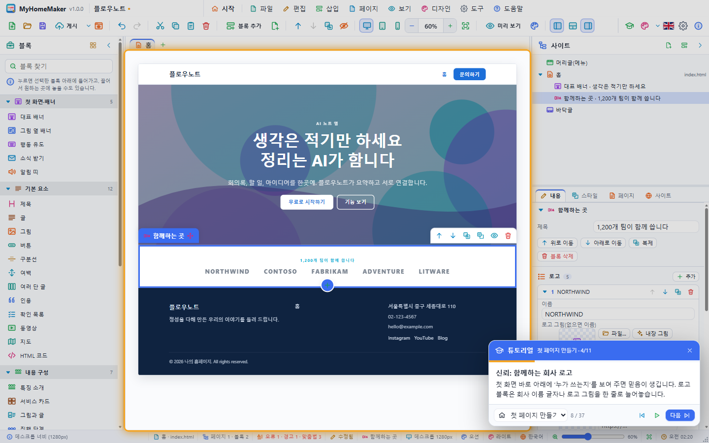
9. 벤토 격자로 기능 소개
도시락 칸처럼 나뉜 카드 격자가 요즘 기능 소개의 대세입니다. 특징 블록을 2열로 두고 아이콘·제목·짧은 설명을 네 칸에 넣었습니다. 항목은 내용 탭에서 더하고, 지우고, 순서를 바꿉니다.
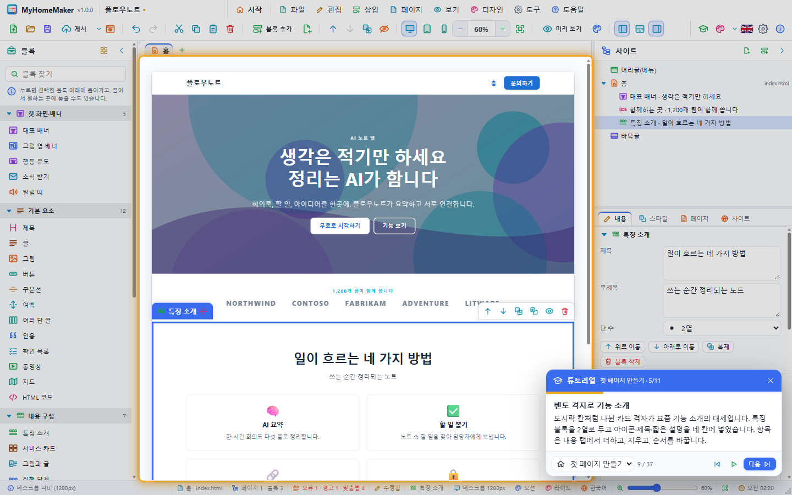
10. 숫자로 보여 주기
‘3분’, ‘1,200+’ 같은 숫자는 긴 설명보다 빨리 읽힙니다. 숫자 블록은 어두운 띠 위에 큰 숫자 네 개를 보여 줍니다.
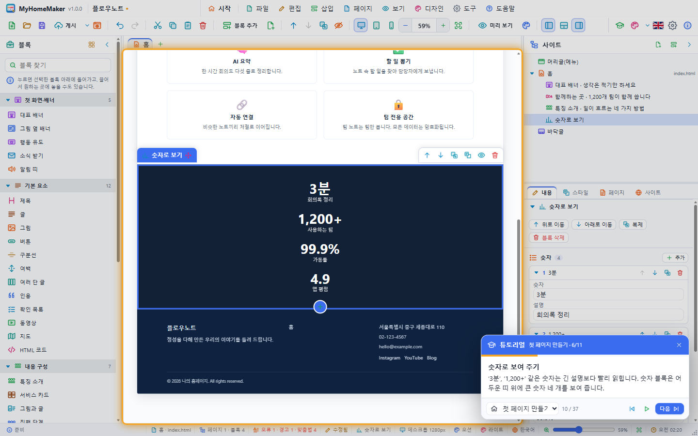
11. 고객 후기
실제 사용자의 한마디는 가장 강한 설득입니다. 후기 블록에 사진·이름·직함과 함께 짧은 말을 넣습니다.
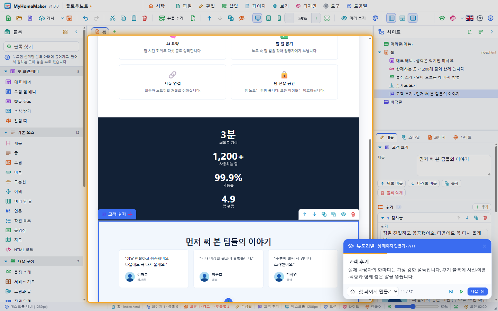
12. 마지막에 한 번 더: 행동 유도
끝까지 내려온 방문자에게 다시 다음 행동을 권합니다. 행동 유도 블록은 눈에 띄는 색의 띠에 제목과 버튼 하나를 둡니다.
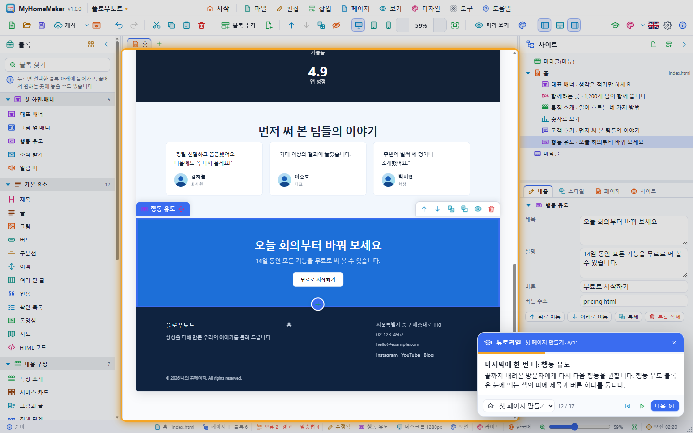
13. 블록 순서 바꾸기
선택한 블록 위 막대의 ↑ ↓ 버튼, Ctrl+↑/↓, 또는 이름표를 끌어서 옮깁니다. 페이지·블록 목록에서 끌어도 됩니다. 실행 취소(Ctrl+Z)로 언제든 되돌립니다.
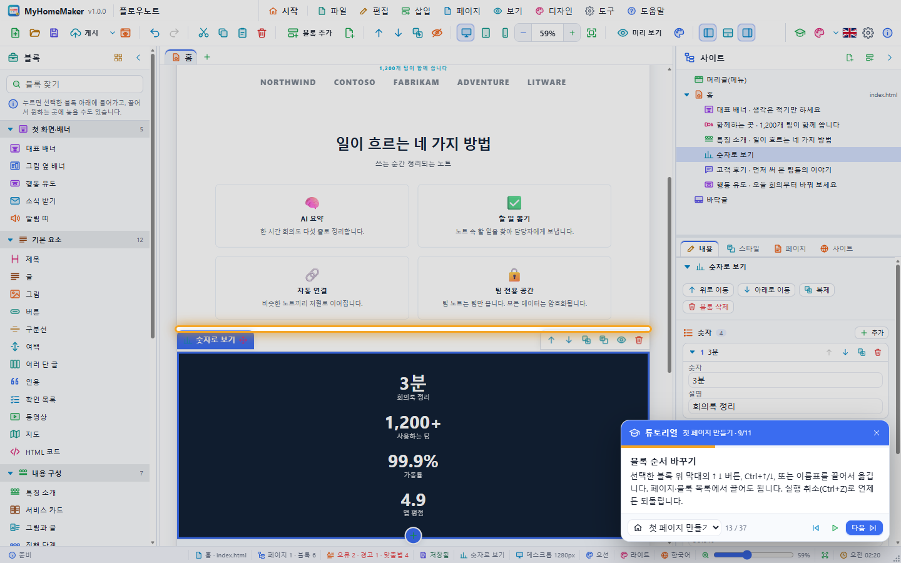
14. 머리글: 늘 보이는 메뉴
머리글은 모든 페이지에 똑같이 나옵니다. 사이트 이름과 오른쪽 버튼(무료로 시작)을 정하고 ‘위에 고정’을 켜 두면 스크롤해도 메뉴와 버튼이 늘 보입니다.
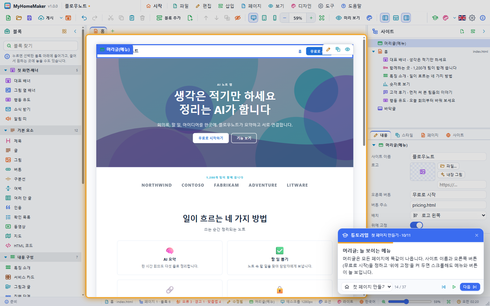
15. 바닥글
바닥글도 모든 페이지에 나옵니다. 짧은 소개, 연락처, 저작권 문구, 소셜 링크를 넣습니다. 페이지 링크는 자동으로 채워집니다.
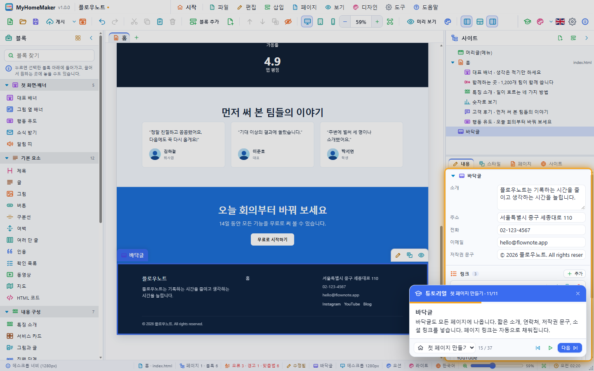
3. 페이지 늘리기
16. 페이지 더하기
탭 줄의 +, 페이지 › 페이지 추가(Ctrl+Shift+N)로 새 페이지를 만듭니다. 이름을 ‘요금제’로 정하고 빈 페이지·자주 쓰는 구성 중에서 고릅니다. 파일 이름(pricing.html)은 자동으로 정해집니다.
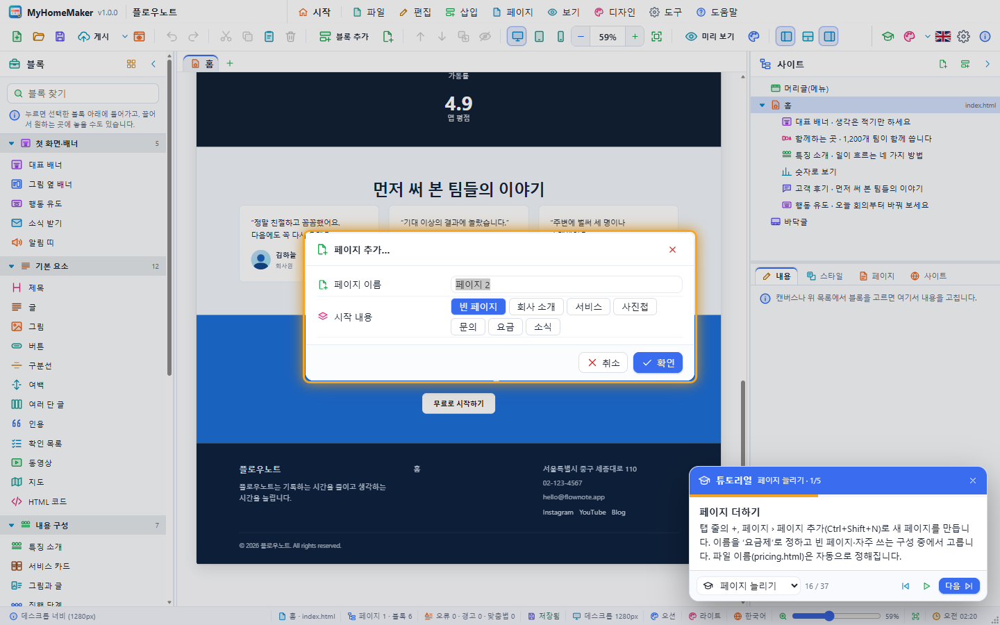
17. 요금제 페이지
제목 블록, 가격표, 자주 묻는 질문으로 요금제 페이지를 만들었습니다. 가격표는 추천 요금제를 강조하고, 질문은 클릭하면 펼쳐집니다.
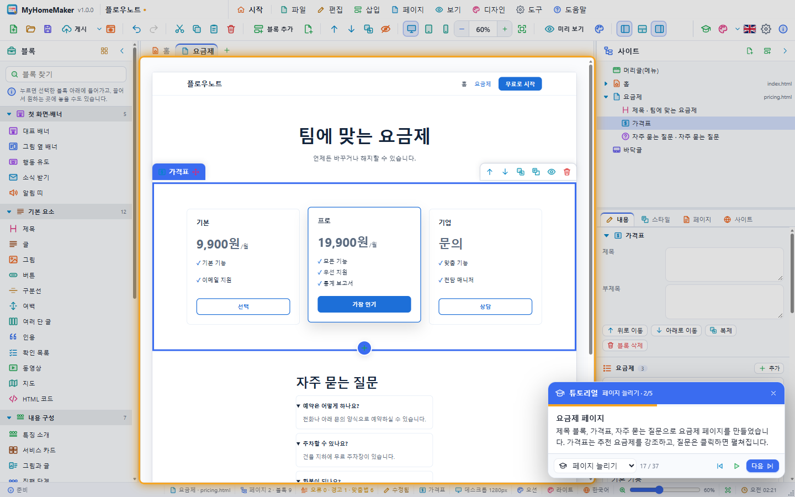
18. 소개 페이지
‘우리 이야기’(그림과 글), 팀 소개, 연혁으로 회사의 얼굴을 보여 줍니다. 탭을 눌러 페이지를 오가고, 탭을 끌어 순서를 바꿉니다.
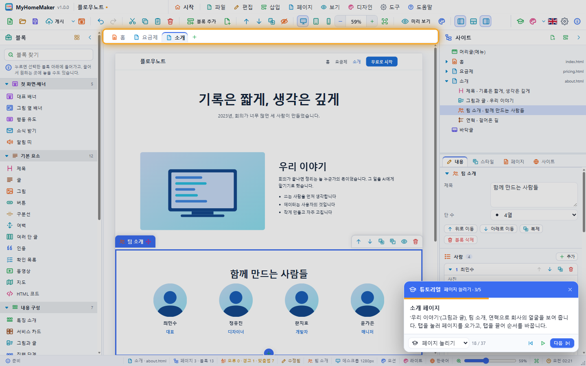
19. 문의 페이지
문의 양식, 소식 받기, 소셜 링크로 마무리합니다. 양식은 받을 이메일이나 양식 서비스 주소를 넣으면 게시한 사이트에서 바로 동작합니다.
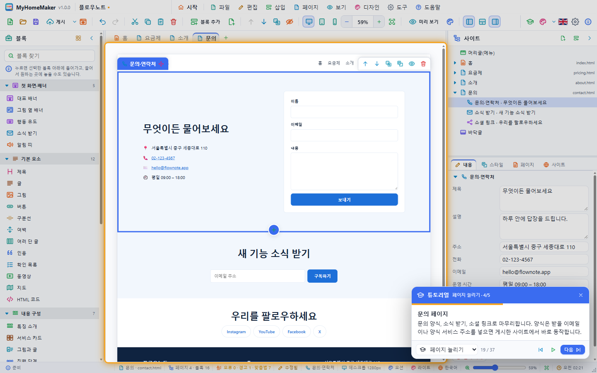
20. 메뉴는 저절로
페이지를 더하면 머리글 메뉴와 바닥글에 링크가 자동으로 생깁니다. 오른쪽 목록에서 페이지와 블록을 한눈에 보고, 페이지 탭에서 메뉴에 보일지 정합니다.
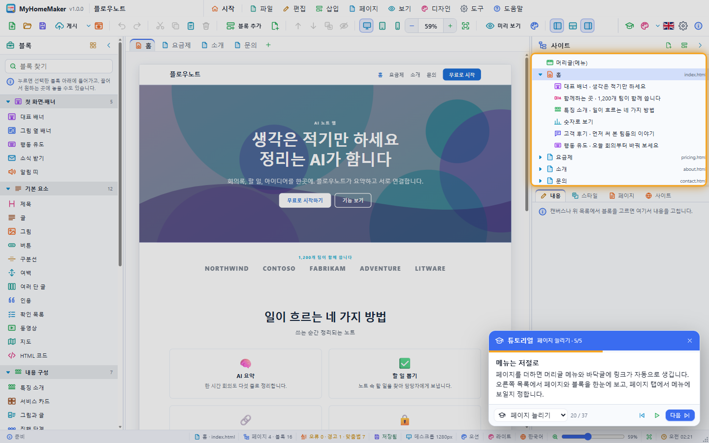
4. 디자인 다듬기
21. 디자인 고르기
디자인(Ctrl+Shift+D)은 색, 글꼴, 모서리, 폭을 한 번에 바꿉니다. 밝은 디자인 24가지와 어두운 디자인 12가지가 있고, 고르는 대로 미리 보여 줍니다.
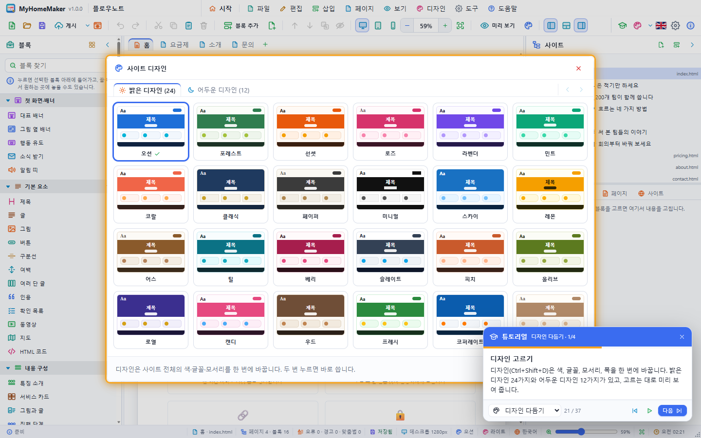
22. 다크 모드
어두운 배경에 밝은 글자와 빛나는 강조색은 요즘 기술 서비스의 대표 스타일입니다. ‘오로라’ 디자인으로 바꿨습니다. 글자와 배경의 대비는 모든 디자인에서 읽기 좋게 맞춰져 있습니다.
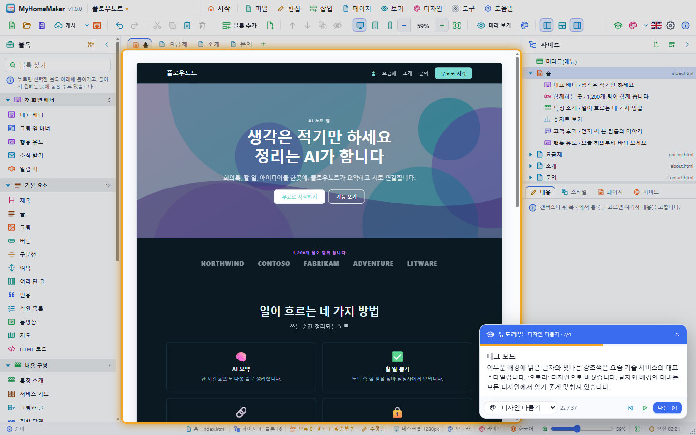
23. 나만의 색과 모서리
사이트 탭에서 디자인의 일부만 바꿉니다. 강조색을 분홍으로, 모서리를 더 둥글게 했습니다. ‘디자인 원래대로’로 언제든 되돌립니다.
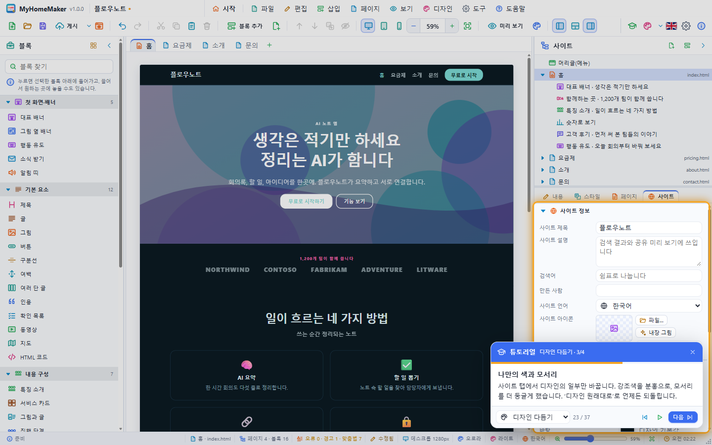
24. 구역마다 배경과 여백
스타일 탭에서 블록의 배경(없음·면·주 색·강조색·어둡게·직접 고른 색), 위아래 여백, 정렬, 폭을 정합니다. 구역마다 배경을 번갈아 주면 긴 페이지도 읽기 쉽습니다.
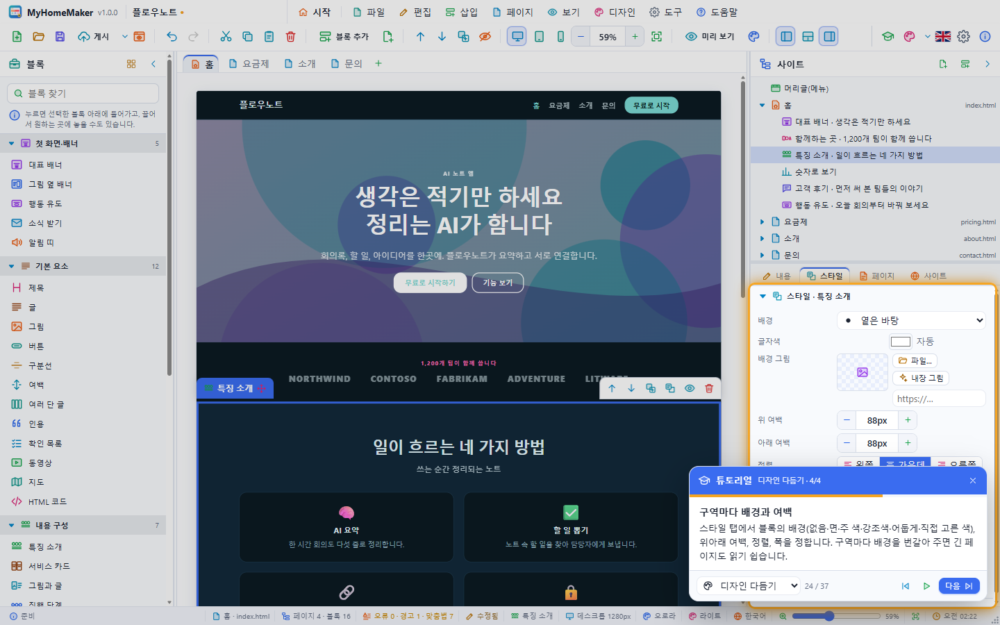
5. 휴대폰에서 보기
25. 태블릿과 휴대폰 너비
방문자 대부분은 휴대폰으로 봅니다. 툴바의 데스크톱·태블릿·휴대폰 버튼으로 너비를 바꿔 확인하세요. 열은 한 줄로 쌓이고 메뉴는 ☰ 버튼으로 접힙니다.
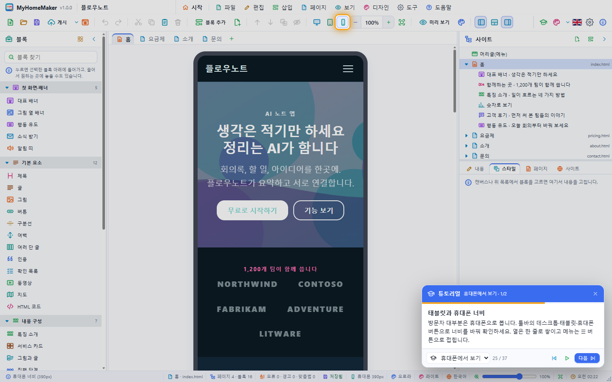
26. 미리 보기
미리 보기(Ctrl+E)는 편집 표시 없이 방문자가 보는 그대로 보여 줍니다. 메뉴 링크를 누르면 페이지가 바뀝니다. F5는 실제 브라우저에서 엽니다.
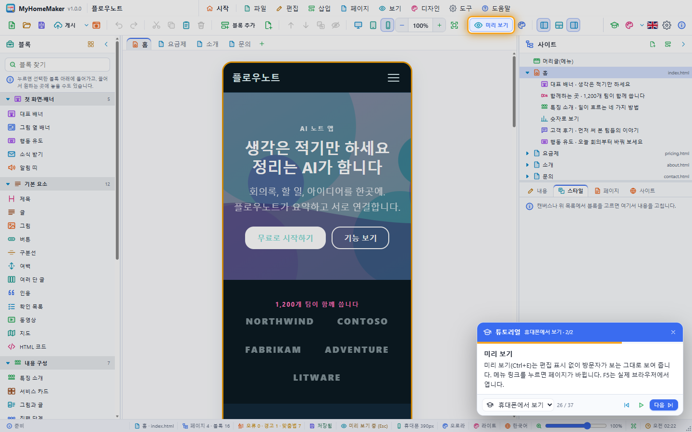
6. 점검하기
27. 문제점 패널
화면 아래의 문제점 패널은 고칠 점(오류·경고)과 사전에 없는 단어(맞춤법)를 고칠 때마다 바로 다시 검사합니다. 툴바의 패널 버튼이나 Ctrl+J로 열고 접습니다.
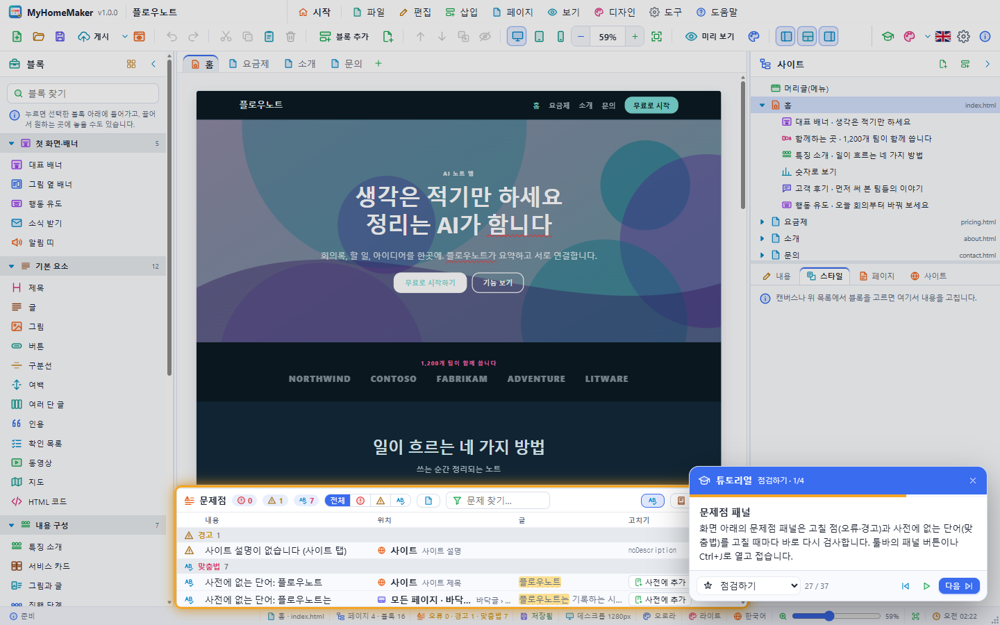
28. 맞춤법 고치기
영어·한국어 사전이 첫 화면의 틀린 단어를 찾았습니다. 줄을 클릭하면 캔버스에 위치가 표시되고, 더블클릭하면 그 칸으로 가서 단어가 선택됩니다. 제안 버튼이나 오른쪽 클릭 메뉴로 한 번에 고칩니다.
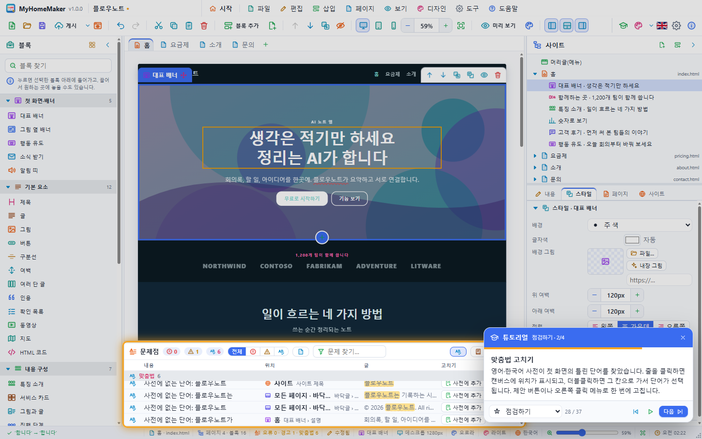
29. 새 단어는 사전에 추가
회사 이름처럼 사전에 없지만 맞는 단어는 ‘사전에 추가’를 누릅니다. 내 사전은 도구 › 사전(설정의 사전 탭)에서 보고, 찾고, 지울 수 있습니다.
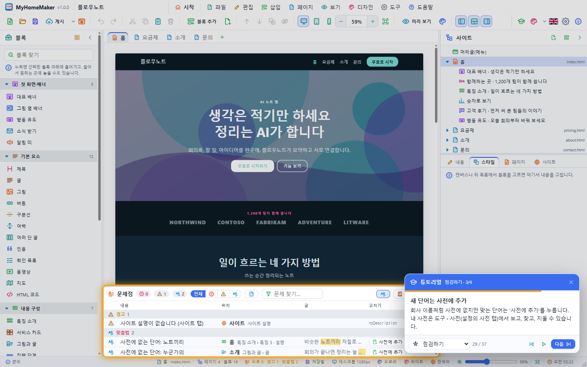
30. 검색엔진을 위한 설명
사이트 탭의 제목·설명·키워드는 검색 결과와 링크 미리 보기에 나옵니다. 설명을 넣자 마지막 경고까지 사라졌습니다. 그림의 대체 글도 검색과 접근성에 중요합니다.
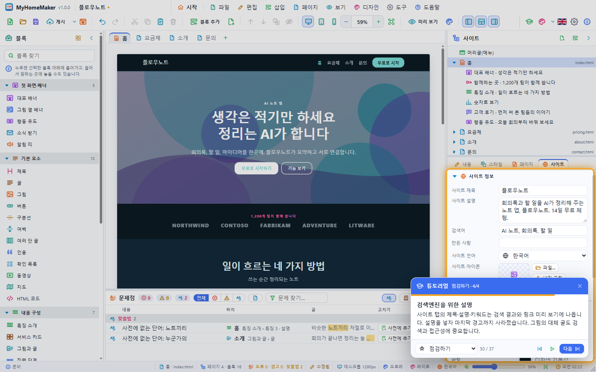
7. 게시하기
31. 저장
저장(Ctrl+S)하면 사이트 전체가 .myhome 파일 하나에 담깁니다. 나중에 다시 열어 이어서 고칩니다. 자주 쓰는 구성은 템플릿(.mhomt)으로 저장해 둡니다.
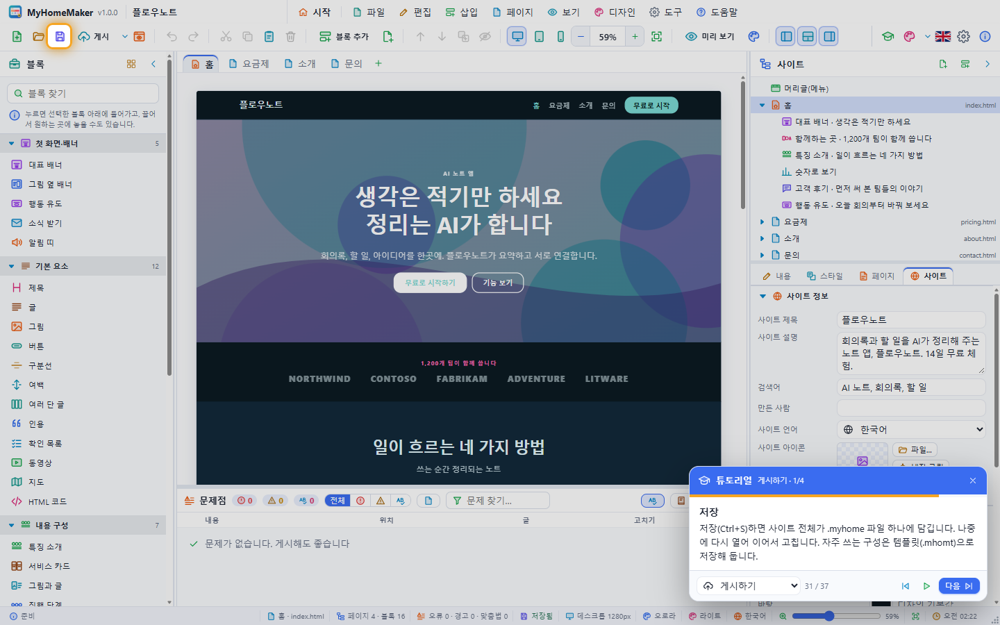
32. 게시하기
게시(Ctrl+Shift+P)는 페이지마다 HTML 파일, 스타일 시트 하나, 그림 폴더를 만듭니다. 폴더나 ZIP으로 받고, 게시 전에 문제점을 한 번 더 확인해 줍니다.
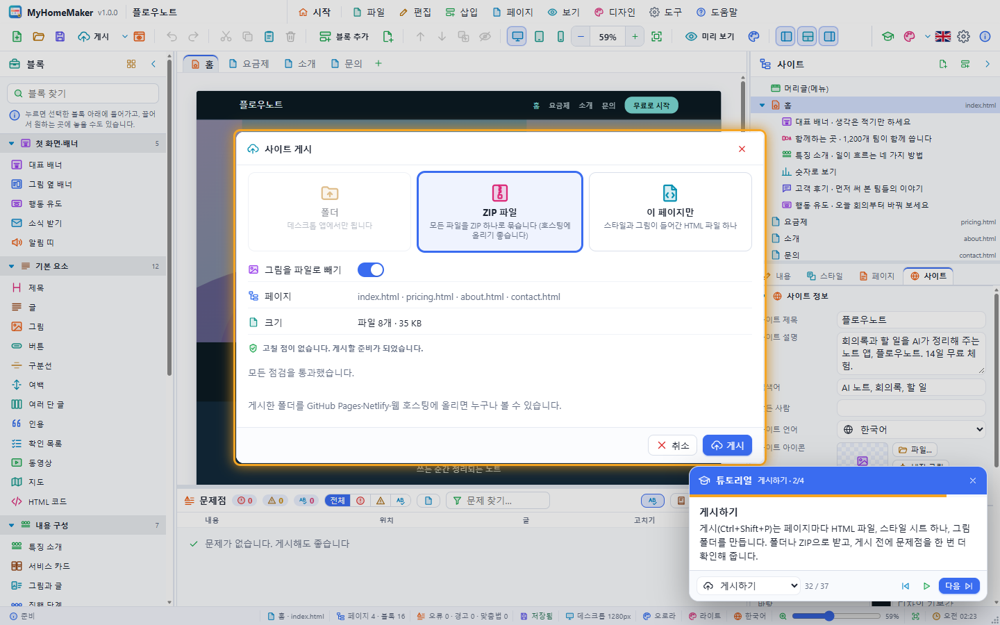
33. 브라우저에서 열어 보기
F5는 지금 사이트를 실제 브라우저에서 엽니다. 다른 브라우저와 실제 휴대폰에서도 열어 보세요.
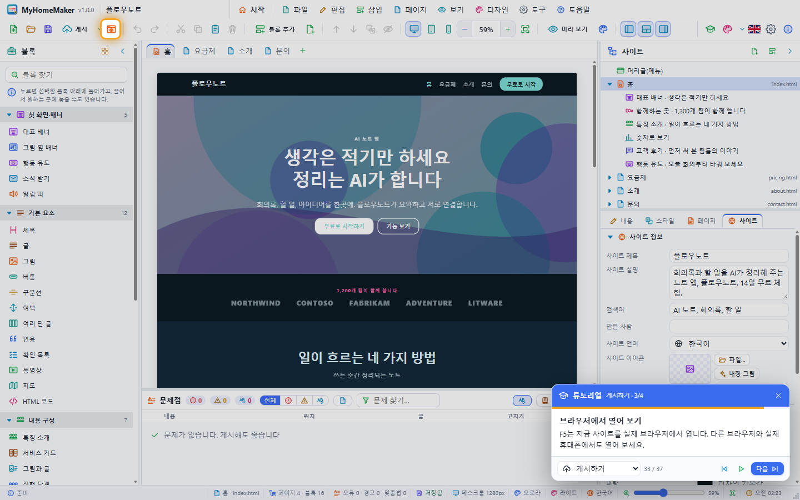
34. 인터넷에 올리기
게시한 폴더는 그대로 올리면 되는 정적 사이트라 빠르고 안전합니다. GitHub Pages, Netlify, Cloudflare Pages 같은 무료 호스팅에 폴더나 ZIP을 올리면 주소가 생깁니다.
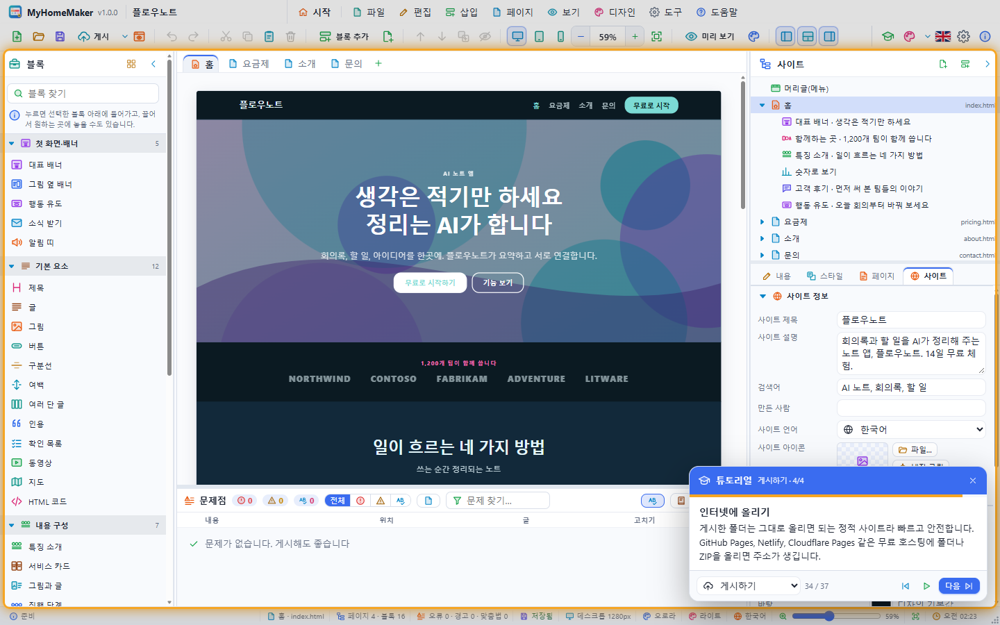
8. 마치며
35. 나에게 맞게
테마(밝은·어두운 40가지 이상), 언어, 글꼴, 시작 화면, 맞춤법과 내 사전을 설정에서 바꿉니다. 툴바의 테마 버튼은 무작위 테마, 옆 ▾는 목록입니다.
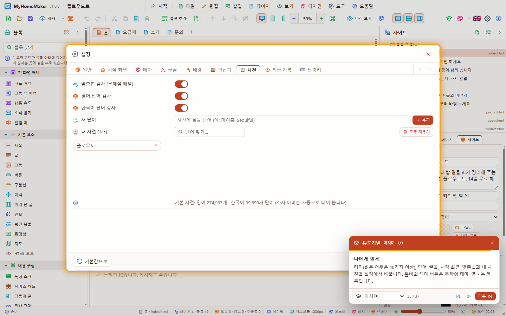
36. 도움말
도움말 › 사용 설명서와 튜토리얼 문서는 그림과 함께 모든 기능을 설명합니다. 단축키는 설정의 단축키 탭에 있습니다.
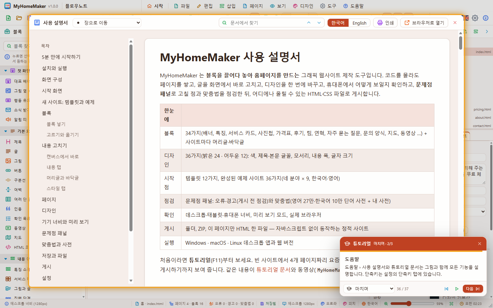
37. 완성!
빈 사이트에서 4개 페이지의 요즘 스타일 홈페이지를 만들어 점검하고 게시까지 했습니다. 이제 예제를 열어 보거나 나만의 사이트를 만들어 보세요. 튜토리얼은 툴바 버튼이나 F11로 다시 볼 수 있습니다.
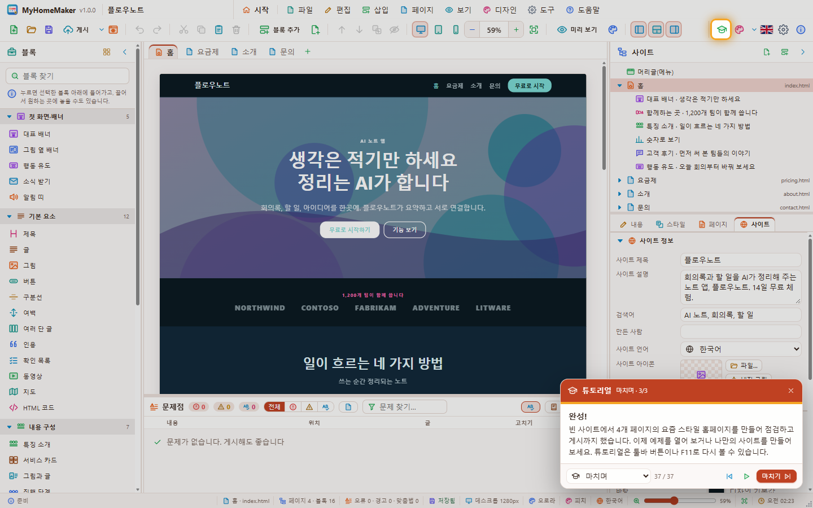
더 알아보기
- 모든 기능은 사용 설명서에 있습니다.
- 예제 40가지(파일 › 예제 열기)를 열어 블록과 디자인이 어떻게 짜였는지 보세요.